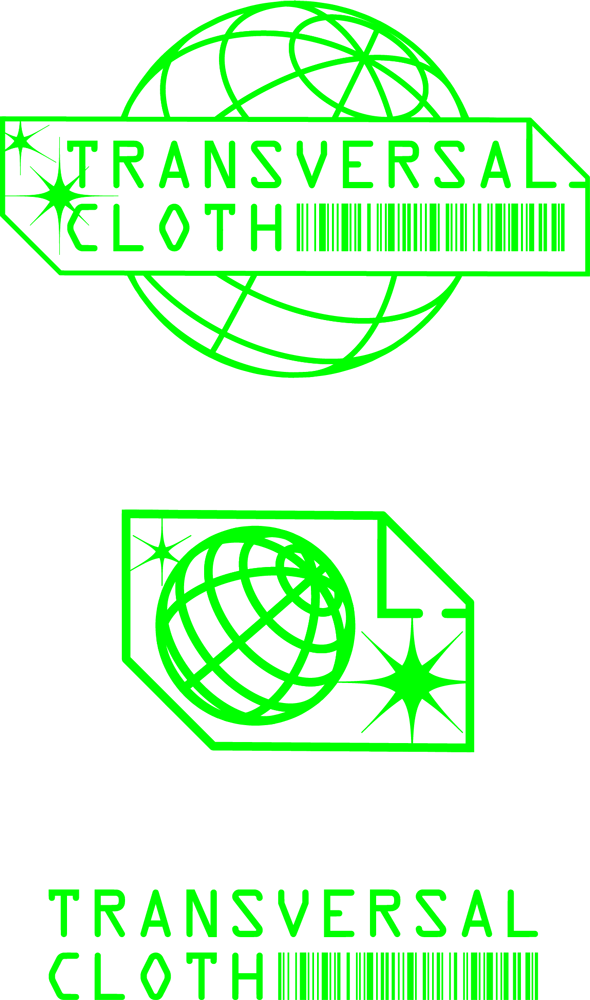
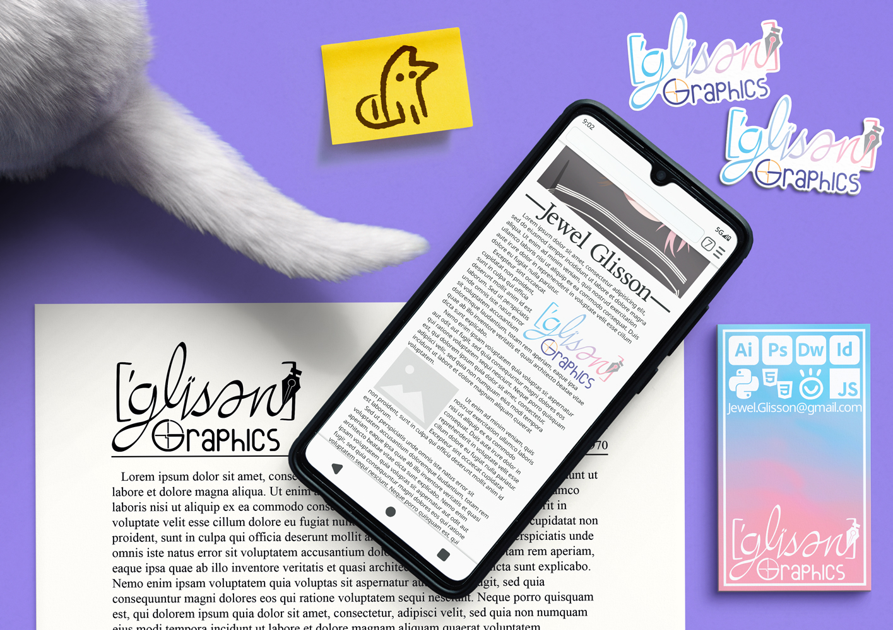
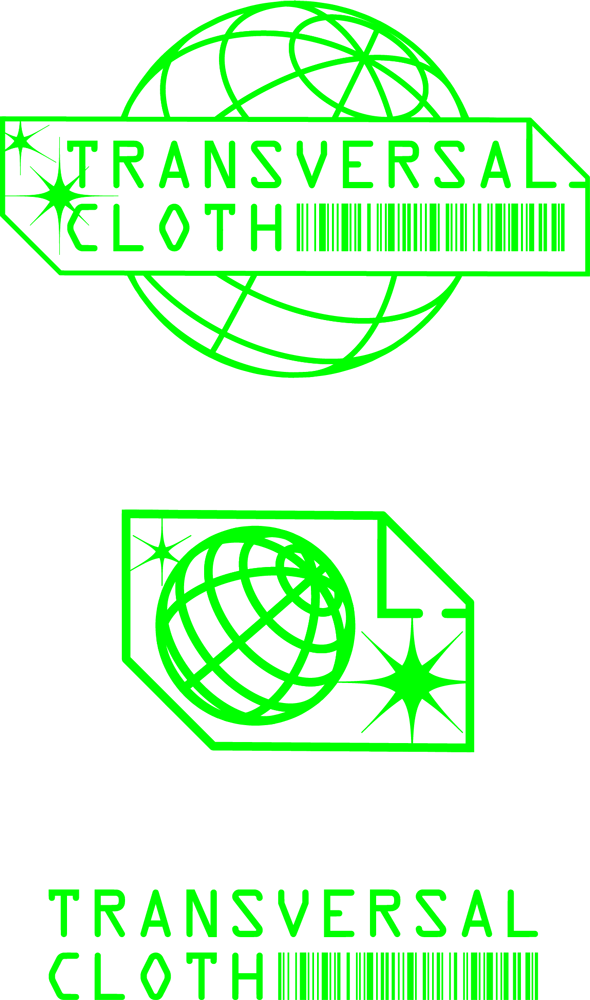
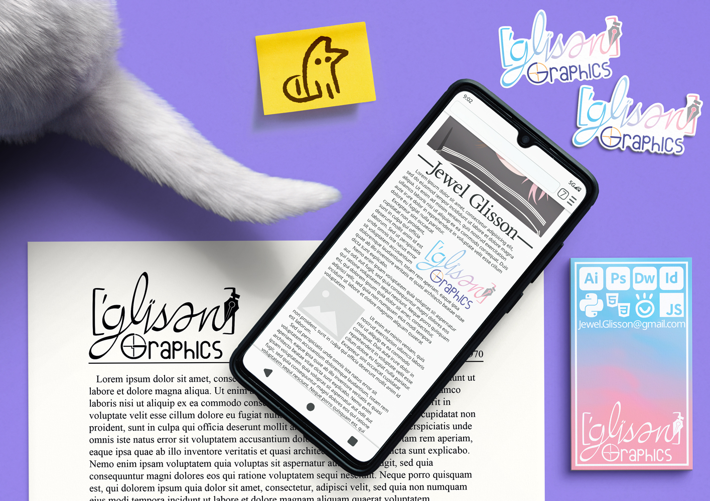
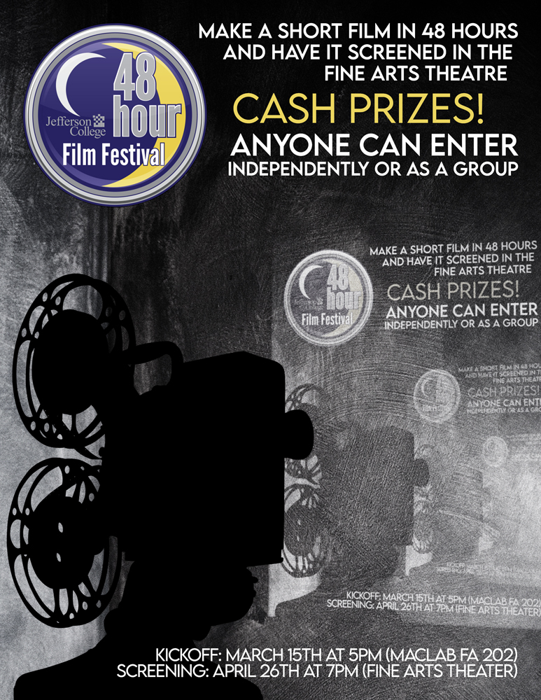
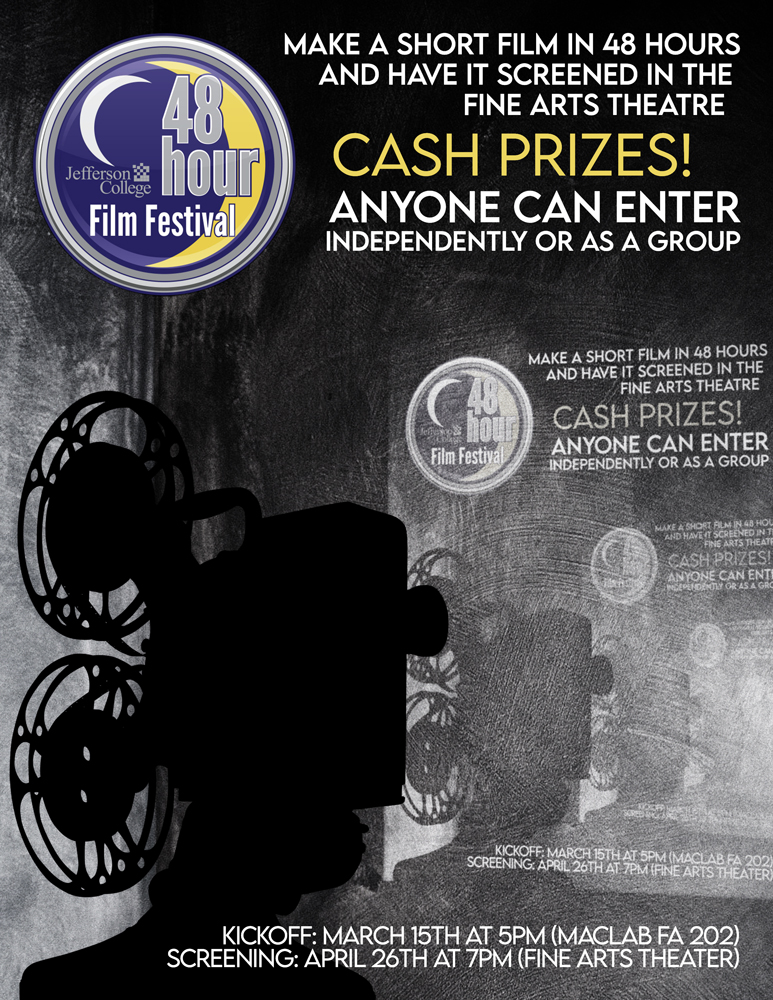
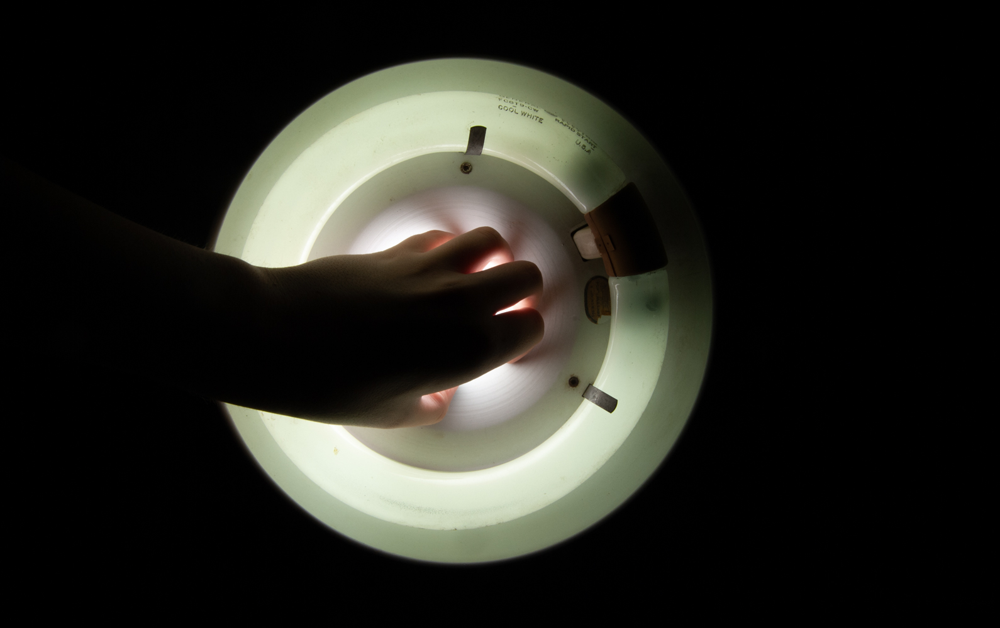
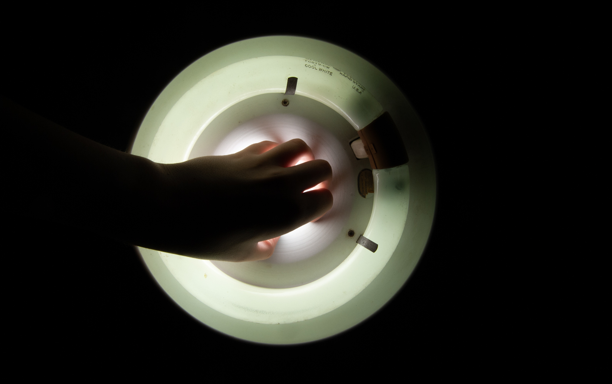

I wish to make the beauty and power I see in more obscure art forms accessible to those who do not have the time or mental energy to dive deep into obscure corners of nerd society. Instead my pieces themselves act as a pre-curated rabbit hole to be explored; all while acting as a nice pretty picture for those who either can not or will not currently engage with it. |
 |
|
I wish to take the beauty and power I see in more obscure art forms accessible to those who do not have the time or mental energy to dive deep into obscure corners of nerd society. Instead my pieces themselves act as a pre-curated rabbit hole to be explored; all while acting as a nice pretty picture for those who either can or will not currently engage with it. |

 



 



).jpg)
 


I am a multimedia artist primarily trained in graphic design and a self taught programmer and linguist. I am currently studying product design at Kansas City Art Institute. All of these influences can be seen throughout my work. In my spare time I continue to write code, as well as study and develop my own conlangs. This page will continue to grow as I produce more pieces that I am proud of, and shrink as my standards increase.
© 2024 Jewel Glisson